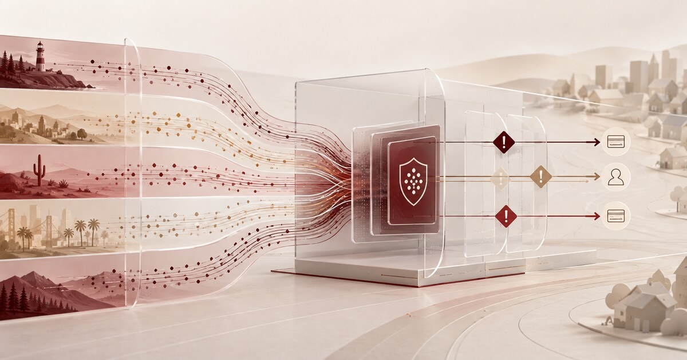

Cornerstone Opens Shared Fraud Intelligence to 600 Credit Unions
A regional access deal for shared fraud signals—and the evidence needed before institutions automate a response.

CreditUnionAI News
Coverage of artificial intelligence regulation, fraud, operations, vendors, and strategy for credit unions.
Latest AI Newsroom Alert
Timely reporting and practical guidance for credit-union decisions.

A regional access deal for shared fraud signals—and the evidence needed before institutions automate a response.

A release and monitoring plan for accurate answers, fresh knowledge and reliable human escalation.
The go-live links account data, applications and core workflow; the evidence test starts after launch.
Seven records that let audit reconstruct what an AI system did, what changed and who approved it.
A go-live file for decision authority, evidence, reasons, exceptions and production monitoring.
Why the new cadence requires a rating check, bylaw amendment and between-meeting oversight plan.
CreditUnionAI Weekly Briefing
The developments credit-union leaders need to understand, translated into practical operating implications.
A concise audio rundown on AI moves reshaping member service and back office efficiency.
A concise discussion of where AI is already improving lending, fraud prevention, member service and operations—and what credit-union leaders should do next.